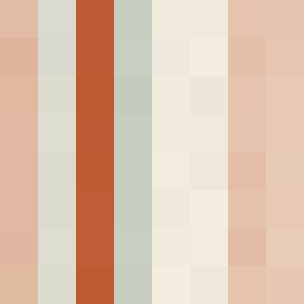
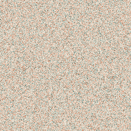
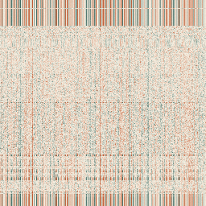

W16 · AI 고르기
AI는 하나가 아니다
우리가 쓰는 Claude 안에는 여러 개의 AI가 들어 있다.
오늘은 그게 뭐가 다른지 알고, 골라 쓰는 법을 배운다.
오늘의 질문
왜 이름이
여러 개일까?
Claude 화면에서 보내기 버튼 옆을 누르면 —
Opus 5
Sonnet 5
Haiku 4.5
…그리고 Effort: low · medium · high · xhigh · max
지금까지 우리는 그냥 나오는 대로 썼다. 오늘 이걸 끝낸다.
01 · AI 안에는
거대한 숫자 표가
들어 있다
우리가 만든 tiny 모델을 열어본 것이다.
이게 진짜로 그 안에 들어 있는 숫자다.
-0.015 -0.002 -0.014 -0.005 +0.001 -0.001 +0.014 -0.009
+0.001 +0.003 +0.003 +0.003 -0.009 +0.005 -0.018 -0.002
+0.003 +0.000 -0.011 -0.014 +0.009 +0.006 +0.004 +0.005
+0.010 +0.009 +0.001 -0.004 -0.004 -0.000 +0.029 +0.011
특별한 숫자가 아니다. 대부분 0에 가까운 아주 작은 수다.
이런 게 tiny 안에만 3,500만 개 있다.
01 · 색으로 칠하면
숫자 하나를
점 하나로

위 표의 왼쪽 위 구석을 색으로 칠했다.
■ 주황 = 플러스
■ 청록 = 마이너스
■ 옅은 색 = 0에 가까움
이제 숫자를 읽지 않고 봐도 된다. 수만 개를 한눈에 볼 수 있다.
01 · 배운다는 것
글을 읽히면
숫자에 무늬가 생긴다

학습 전 — 아무 숫자나 채워둔 상태

학습 후 — 위키백과를 읽힌 뒤
같은 자리, 같은 개수다. 숫자 값만 바뀌었다.
왼쪽은 아무 무늬가 없고, 오른쪽엔 세로줄과 가로띠가 보인다 — 저게 배운 흔적이다.
01 · 정리
학습과 사용은
다른 일이다
만들 때 (학습)
숫자를 조금씩 고친다
글을 읽히고, 다음 글자를 틀릴 때마다 숫자를 아주 조금 바꾼다. 수억 번 반복한다. 여기에 시간과 돈이 든다.
쓸 때 (사용)
숫자는 그대로다
우리가 말을 걸어도 안의 숫자는 하나도 안 바뀐다. 읽어서 계산만 한다.
그래서 우리가 한 말로 AI가 똑똑해지지는 않는다. 학습은 만드는 사람만 한다.
02 · 크기
그 숫자가 몇 개냐가
AI의 크기다
우리가 만든 모델
tiny 2,300만 개 짧게 23M
small 1억 1,000만 개 짧게 110M
large 3억 3,600만 개 짧게 336M
M = 백만(million) B = 10억(billion)
그래서 7B 라고 하면 70억 개, 70B 면 700억 개다
숫자 하나하나가 대단한 게 아니다. 몇 개나 있느냐가 다를 뿐이다.
02 · 얼마나 차이 나냐면
우리 것과 회사 것
DeepSeek 하나는 우리 tiny 2만 9천 개를 합친 크기다.
그런데 Claude와 ChatGPT는 몇 개인지 아무도 모른다 — 회사가 공개하지 않는다.
03 · 크면 뭐가 달라지나
좋은 점과
치르는 값
좋은 점
더 어려운 걸 한다
여러 단계를 거쳐 생각해야 하는 일, 길게 이어지는 이야기, 헷갈리는 질문에 강해진다.
치르는 값
자리 · 시간 · 돈
숫자가 많으면 컴퓨터 안에 자리를 많이 차지하고, 한 글자 고르는 데 계산이 더 많아 느리고, 그만큼 비싸다.
그래서 회사들은 큰 것 하나가 아니라 크고 작은 여러 개를 만들어 둔다.
04 · 크기만이 아니다
무엇을 얼마나
읽었느냐
같은 크기라도 읽은 글의 양과 질이 다르면 실력이 달라진다.
이걸 학습 토큰이라고 부른다 — 읽힌 글자 수라고 생각하면 된다.
그래서 모델을 볼 때 숫자를 두 개 본다 — 파라미터(크기)와 학습 토큰(읽은 양).
직접 보기
우리가 만든 모델을
나란히 놓고
주소 aitopatom-27f6.taildae05f.ts.net:10000
모델 파라미터 학습 토큰
tiny 23M 3억
small 110M 3억
large 336M 76억
같은 문장을 넣으면 네 칸이 동시에 글을 쓴다. 먼저 tiny와 small만 비교해 보자.
발견 1
읽은 양이 같은데
크기만 5배
tiny 23M · 3억 토큰 → 말이 자주 무너진다
small 110M · 3억 토큰 → 훨씬 멀쩡하다
읽은 글은 똑같다. 다른 건 크기뿐이다.
그런데 결과가 눈에 띄게 다르다 — 크기가 하는 일이 이것이다.
잠깐 · ppl이 뭐냐면
다음 글자를 맞힐 때
몇 개를 놓고 헷갈렸나
모델에게 “오늘 날씨가 참 ___” 를 주고 다음 글자를 맞히게 한다.
그때 몇 개쯤 놓고 고민했는지를 숫자로 적은 것이 ppl이다.
ppl 45
45개를 놓고 헷갈렸다
확신이 없다. 아무 말이나 튀어나오기 쉽다.
ppl 23
23개면 충분했다
훨씬 확신이 있다. 낮을수록 잘 맞힌 것.
단, ppl이 낮다고 꼭 좋은 글은 아니다 — 숫자로 순위를 매기지 말고 나온 글을 읽고 판단하자.
발견 2
그럼 large는
얼마나 더 좋을까?
small 110M · 3억 토큰 · ppl 24.2
large 336M · 76억 토큰 · ppl 23.3
크기 3배 · 읽은 글 25배 … 그런데 거의 비슷하다
large는 글을 끝까지 다 읽지 못했다(0.26에폭). 재료가 많아도 공부를 덜 하면 소용없다.
05 · 어디서 도나
왜 하필
그래픽카드일까?
게임 화면을 그리는 그 부품이다.
화면의 수백만 개 점을 동시에 칠하려고 만들어졌다.
보통 컴퓨터 머리(CPU)
어려운 걸 하나씩
똑똑한 사람 몇 명이 차례대로 푼다.
그래픽카드(GPU)
쉬운 걸 수천 개 동시에
단순 계산을 하는 일꾼 수천 명이 한꺼번에 움직인다.
AI가 하는 계산이 딱 그런 모양이다 — 간단한 곱셈·덧셈이 어마어마하게 많다.
06 · 우리 것
우리 반 DGX Spark
우리가 쓰는 AI 전용 컴퓨터다.
오늘 비교하는 모델도, 드라마 영상도, 그림과 소리도 전부 여기서 만들어진다.
영상
MiniMax H3
한 컷 만드는 데 약 2분 45초
글
우리가 만든 모델
오늘 비교할 tiny · small · large
한 번에 하나씩 만든다. 여럿이 걸면 줄을 선다 — 컴퓨터가 하나뿐이기 때문이다.
07 · 그럼 Claude는?
내 앞이 아니라
저 멀리서 돈다
DGX Spark
우리 집에 있다
전기를 우리가 내고, 우리만 쓴다. 꺼지면 아무것도 안 된다. 크기도 우리가 안다.
Claude · ChatGPT
회사의 큰 컴퓨터에 있다
내 아이패드는 말을 전달할 뿐이다. 인터넷이 끊기면 아무것도 못 한다.
그래서 아이패드처럼 작은 기기에서도 아주 큰 AI를 쓸 수 있다 — 내 기기가 일하는 게 아니니까.
08 · 비밀
회사 모델은
크기를 알려주지 않는다
우리 모델은 23M·336M을 안다.
그런데 Opus·Sonnet이 몇 개인지는 아무도 공개하지 않는다.
대신 힌트가 하나 있다 — 가격표. 큰 모델일수록 계산이 많고, 그만큼 비싸게 받는다.
09 · 가격이 알려주는 것
같은 회사 안에도
사다리가 있다
Claude (글 100만 자 정도를 만들어낼 때의 값)
Haiku 4.5 $5 빠르고 싸다 · 간단한 일
Sonnet 5 $10 중간
Opus 5 $25 제일 똑똑하고 제일 비싸다
ChatGPT 가장 싼 것 $0.4 ↔ 위쪽 모델 $50 = 100배 넘게 차이
우리는 돈을 직접 내진 않지만, 사용량으로 똑같이 치른다 — 비싼 걸 쓰면 한도가 빨리 닳는다.
10 · 또 하나 고를 것
크기 말고
생각 시간
같은 모델에게 더 오래 생각하라고 시킬 수 있다.
이걸 Effort라고 부른다.
low · medium
바로 답한다
쉬운 일. 빠르고 사용량도 적게 든다.
high · xhigh · max
한참 생각하고 답한다
어려운 일. 느리고 사용량을 훨씬 많이 쓴다.
크기를 바꾸는 것과 다른 축이다 — 작은 모델에게 오래 생각시킬 수도, 큰 모델에게 빨리 답하라 할 수도 있다.
여는 법
보내기 버튼 옆에
다 들어 있다
1 보내기 버튼 옆의 모델 이름을 누른다
2 모델 고르기 (안 보이면 “더 많은 모델”)
3 Effort 고르기 — low · medium · high · xhigh · max
4 Thinking — Effort 위에 올리면 켜고 끄기
(Opus 5는 끌 수 없다)
대화 도중에 바꿔도 된다. 다음 대답부터 적용된다 — 그래서 같은 대화에서 바로 비교할 수 있다.
이제 직접
세 번 바꿔보고
고르는 기준을 만든다
매번 예상을 먼저 적는다. 결과를 보고 나면 “그럴 줄 알았다”가 되기 때문이다.
실험 1
쉬운 일에도
차이가 날까?
과제 “고양이”로 4행시를 지어줘
2 + 2 는?
가 Haiku 4.5 · low 나 Opus 5 · max
기록 걸린 시간(초) · 더 나은 쪽이 있었나
이걸 맨 먼저 하는 이유가 있다. 끝나고 이야기하자.
실험 2
빨리 답하면
틀린다
문제 배트와 공을 합치면 1,100원이다.
배트가 공보다 1,000원 더 비싸다.
공은 얼마인가?
같은 모델로 effort low → effort max
기록 답 · 시간 · 생각하는 게 보였나
먼저 우리끼리 풀어본다. 우리도 틀린다면, AI가 틀리는 이유도 같은 것이다.
실험 3
게임이 한 방에
돌아가나?
똑같은 프롬프트를 양쪽에
화살표로 움직이는 공이 위에서 떨어지는 블록을
피하는 게임을 만들어줘. 점수를 화면에 보여줘.
HTML 한 파일로.
가 Haiku 4.5 나 Opus 5
볼 것은 예쁜 코드가 아니다 — 처음에 돌아갔나 · 몇 번 고쳐서 돌아갔나.
기록지
세 가지만 적는다
실험 내 예상 걸린 시간 정말 달랐나
4행시 ? 가 ?초 / 나 ?초 ?
함정 문제 ? low ?초 / max ?초 ?
게임 ? 가 ?번 / 나 ?번 고침 ?
“느낌이 좋다” 말고 맞았나 · 몇 초 · 몇 번으로 적는다.
값 매기기
비싼 걸 쓰면
얼마나 빨리 닳나
확실한 것
Claude 안내 문서 — “effort와 thinking을 올리면
토큰을 더 쓰고 사용 한도에 더 빨리 닿는다”
모르는 것
정확히 몇 배인지는 공개하지 않는다
그래서 가격으로 짐작한다 — Haiku $5 ↔ Opus $25 = 5배
4행시에 Opus·max를 쓰면 5배 값을 치르고 같은 시를 받는다.
오늘의 결론
고르는 기준을
직접 써보자
작고 빠른 걸로 충분한 일
우리가 찾은 것
예: 짧은 글, 번역, 정리, 답이 뻔한 질문 …
크고 오래 생각해야 하는 일
우리가 찾은 것
예: 게임 만들기, 여러 단계 문제, 함정 있는 질문 …
이 두 칸을 채우면 오늘 수업은 끝이다. 다음부터는 누르기 전에 한 번 고른다.
2시간 진행표
절반은 알고,
절반은 해본다
0:00–0:25
AI의 크기
숫자 표 · 파라미터 · 학습 토큰.
0:25–0:50
우리 모델 비교
tiny vs small vs large. 발견 두 가지.
0:50–1:10
어디서 도나
그래픽카드 · DGX Spark · Claude는 어디에.
1:10–1:20
가격과 Effort
사다리 · 생각 시간 · 설정 여는 법.
1:20–1:50
실험 세 가지
예상 먼저, 그다음 바꿔보기.
한 줄로 정리
AI는 하나가 아니라 여러 개고,
어느 걸 쓸지는 내가 고른다.
크기는 할 수 있는 일을 정하고,
고르는 일은 치르는 값을 정한다.
나가기 전에
오늘 가장
뜻밖이었던 건?
발견
차이가 없던 곳
큰 걸 써도 똑같았던 일이 있었나. 어떤 일이었나.
발견
차이가 컸던 곳
거기선 무엇이 달랐나 — 답이? 속도가? 고친 횟수가?
혼자 더 파볼 것 — 집에서 쓰는 AI의 설정을 열어보기. 무엇을 고를 수 있나. 끌릴 때만.